Embellishment
Embellishment Link to heading
Also known as Elaborations, ornamentation, non-chord Tones, They are notes that doesn’t belongs to the chord tone
Embellishment review Link to heading
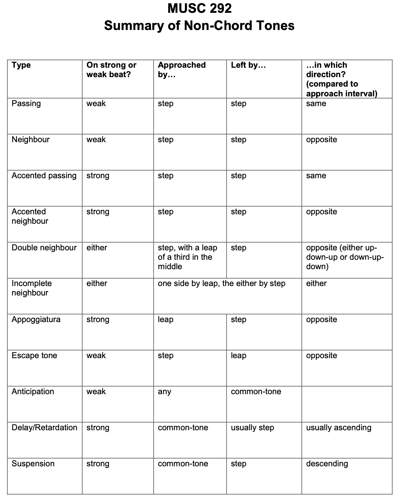
Passing Tone: may be accented or unaccented
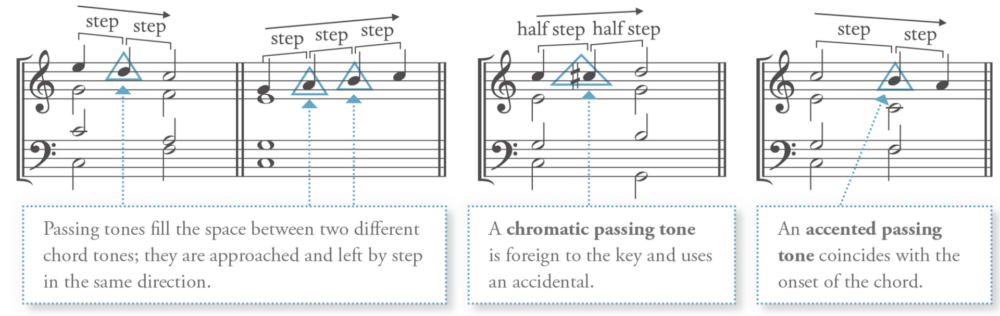
Neighbour Tone: may be accented or unaccented
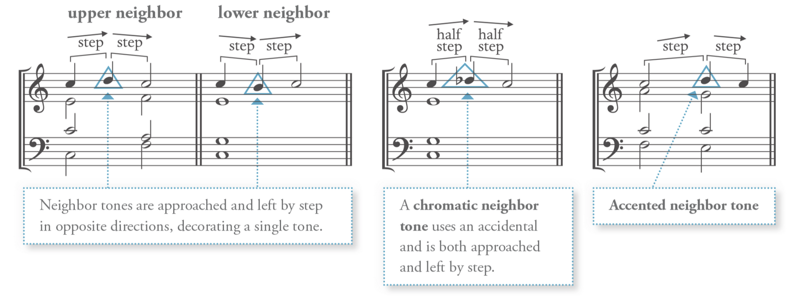
Double Neighbour Tone: two neibour tone move simultaneously
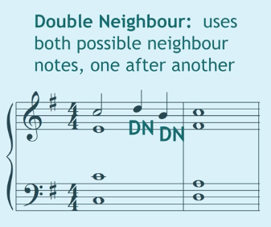
Incomplete Neighbour Tone: not mentioned, assumed can be both accented or unaccented
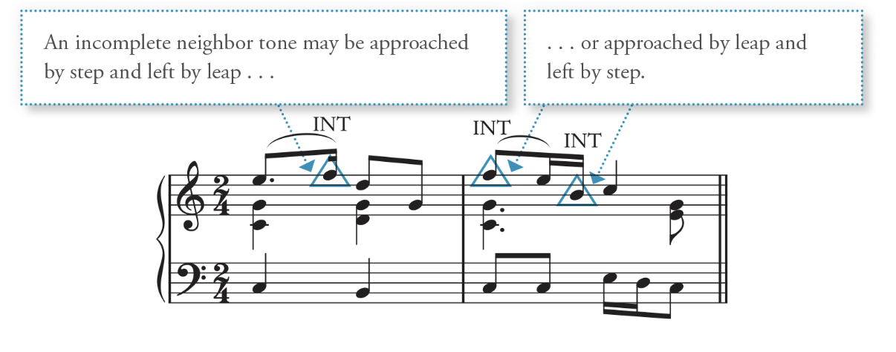
Appoggiaturas: (accented) Leave by leap and then opposite direction by step
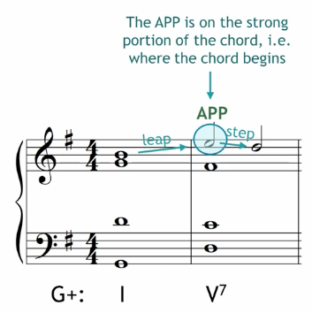
Escape tone (Echappee): (non-accented) move by step and leave in the opposite direction
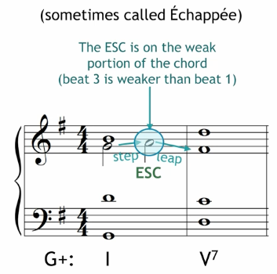
Anticipation: Approached and left by common tone, must be unaccented.
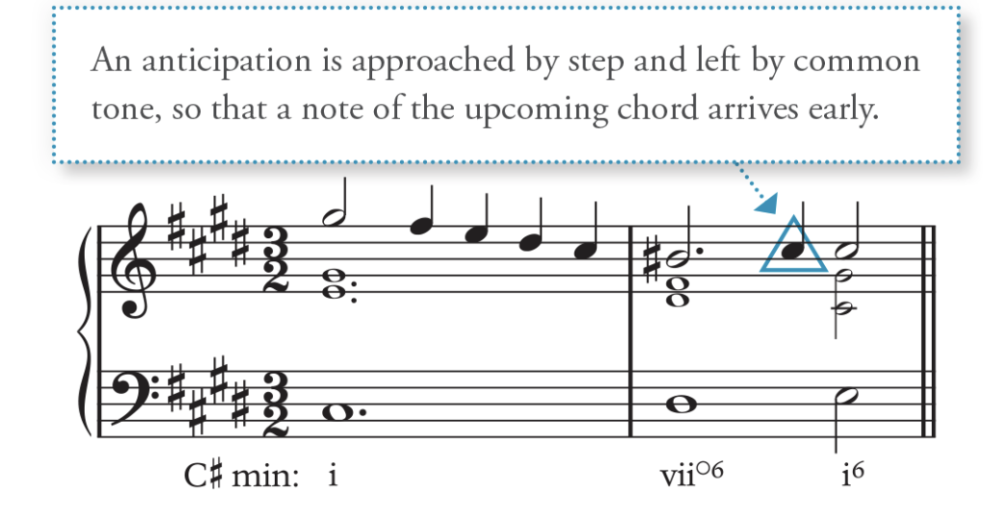
Delay/Retardation: A suspension that resolves up, must be accented.
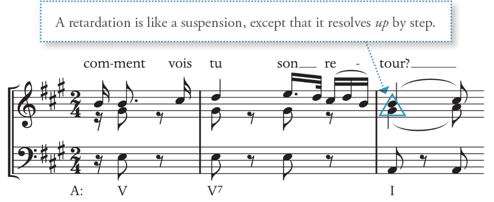
Suspensions: sustain a previous dissonant note and resolve down by step, must be accented.
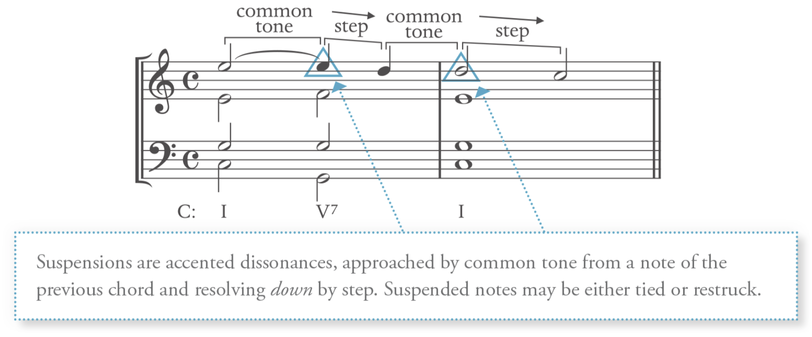
Chordal Skip: move to a different note in the current chord - Very useful for a voice leading problem
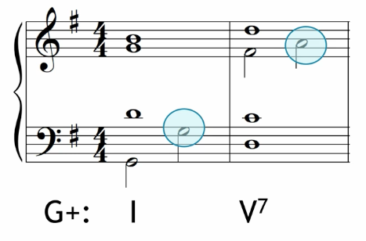
When saying a note is accented or unaccented, it means that if this note appears along with other chords on the downbeat. (At the start of a chord-strong beat/weaker part of the beat)
When using them Link to heading
- distribute evently throughout te voice
- Two or more simultaneous non-chord tones must be a consonance with one another.
Embellishing Tone Link to heading
Adding Embellishing Tone Link to heading
Accented dissonance (Special Rule): Complete harmony can appear only with the embellishment tone.
Do NOT double the note that is being embellished (create parallels)
The 2 in figure bass often leads to an accented dissonance
9 as suspension and always resolve down: It must appear at least an octave above the highest chord root: used in V9 in root position (rarely in inversion) -> V7 with an added ninth.
Sus 9 is an exception from the Complete harmony
Other embellishing tones: Link to heading
I^64^: See cadencial V^64^ IV: see lead to tonic, tonic embellishment VI^6^: Embellishment of I
Pedal Point Link to heading
A single sustained tone (usually in the bass)
The pedal point is decorated by the chord that sounds above it Used at the beginning or the end: often embellish a tonic or dominant chord
Label the chord above the pedal point in its root position
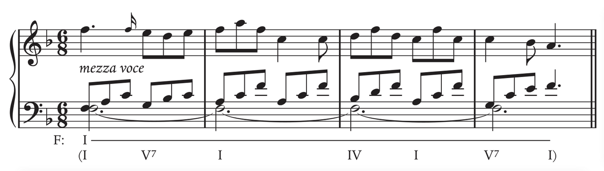
Embellishing Harmonies with 64 Chord Link to heading
Contain the dissonant fourth above the bass and thus do not function like other chords: When the fourth is presented in the upper voice, they are consonant. Any fourth made up with bass tone is dissonant. Hence all 64 chords are dissonant
64 (except cadential 64) appears in weak beats
The 64 are labelled by their specific function in addition to their Roman numeral: pass 64, arp 64, etc.
64 chords function differ from their root chord
The bass is doubled in all types of 64 chords.
The 64 specific chord functions: Link to heading
Cadential 64: see cadential I64-V Link to heading
Cadential 64 can be embellished with other 64 chords. The 64-53 combination also works with other chords
Pedal 64: Link to heading
A sustained bass tone And the upper voice root position chords are decorated with embellished tones and stationary bass Most often, embellish either I or V
Passing 64: Link to heading
A passing bass tone Passing tone with 5̂ is extremely common
Arpeggiated 64 Link to heading
Occurs when upper voice chords are sustained Most often found in instrument genres
Embellishing Harmonies Link to heading
The embellishing tone in the bass form as a result of a neighbour’s tone or passing tones
When Labelling the chord for every single embellishing tone, it all depends on the level of detail desired.
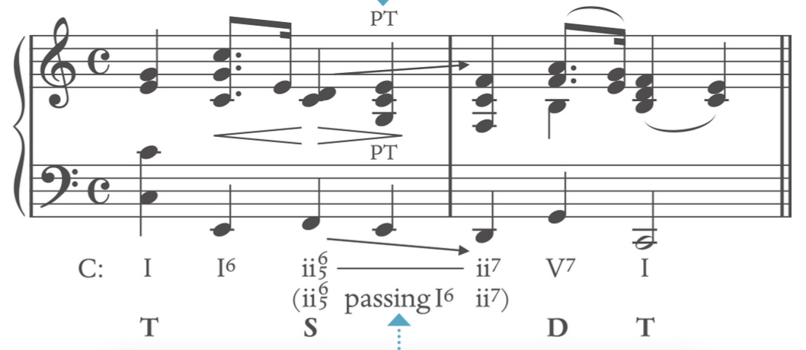
Functional harmonic progressions Link to heading
Where the function of the embilishment chord fits the current harmonie progression (Label them as normal harmony chords)
Nonfunctional harmonic progressions Link to heading
The embellishing function should be labelled in the case when chord does not have function a functional harmonic progressions
e.g. I-“ii^7^”-I^6^ is a non-functional harmonic. (ii^7^ embellished to I) the ii^7^ does not lead to V, and the chordal seventh does not resolve. The “passing function” should be explicitly noted in non-functional harmonic progressions.
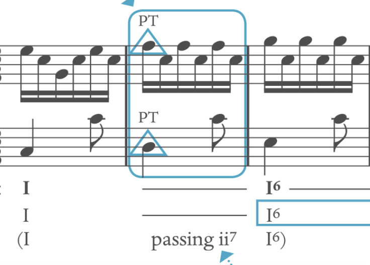
Passing IV^6^ (ascending motion in the bass) Link to heading
Extremely common in the stepwise ascent in the bass between V^(7)^-V^6(5)^
Passing V6 (Descending motion in the bass) Link to heading
Extremely common in the stepwise descent in the bass between I-vi or IV^6^ V^6^-IV^6^ or V^6^-vi does not serve as dominant, the 7̂ does not need to be raised. Hence usually appear as v^6^ in the minor triad
Lament bass: Use half-step moving from I to V Link to heading
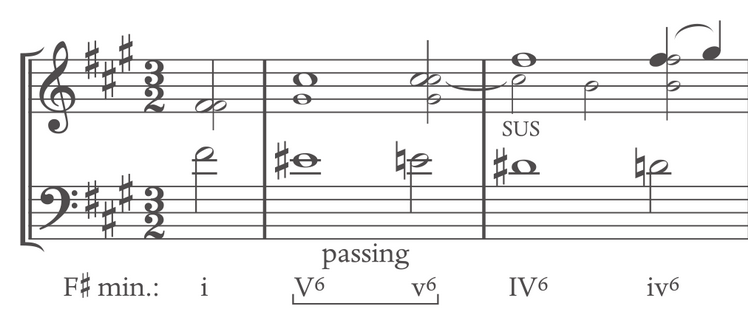
Common Usage of passing IV^6^ and passing V^6^ Link to heading
By using passing IV^6^ and passing V^6^, we can easily harmonize the scale in the bass in steps.
Both Passing V6 and Passing IV6 are very useful when two dominant chords is sandwiched.
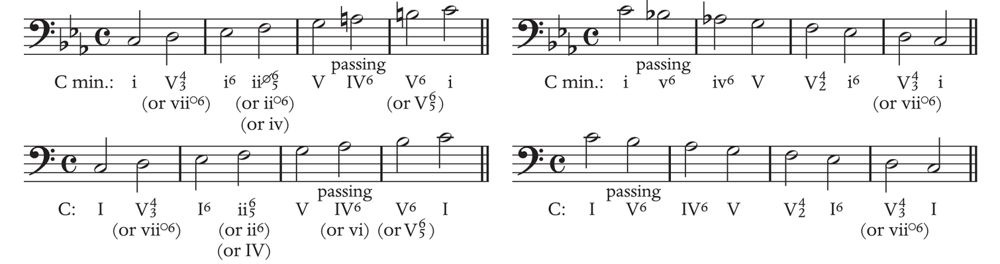